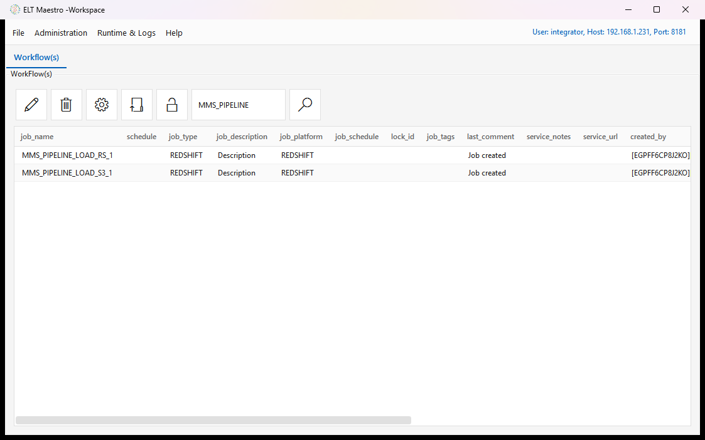
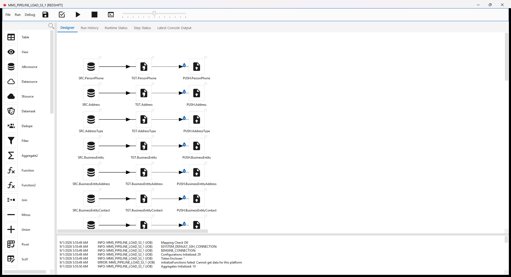
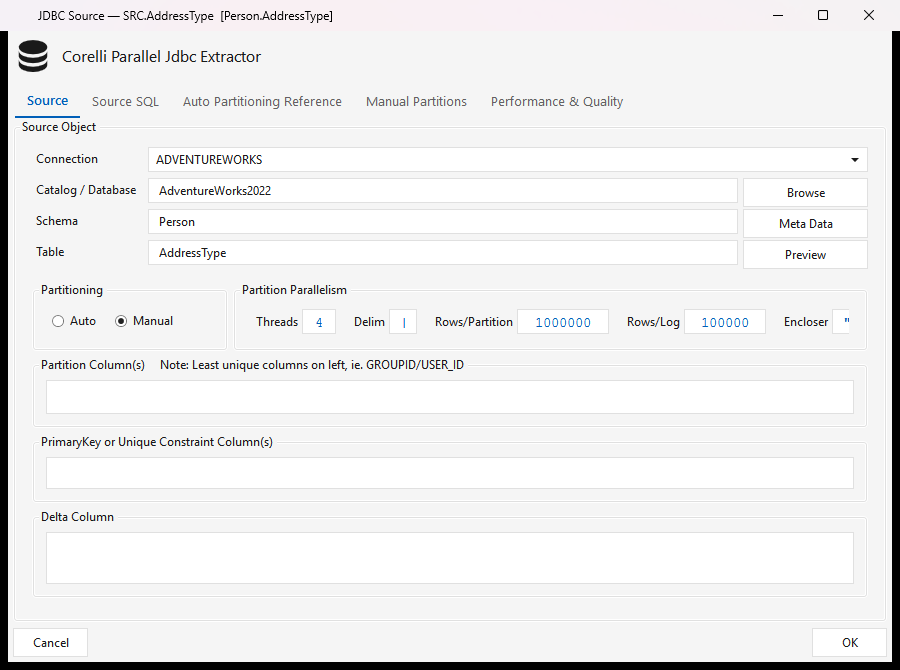
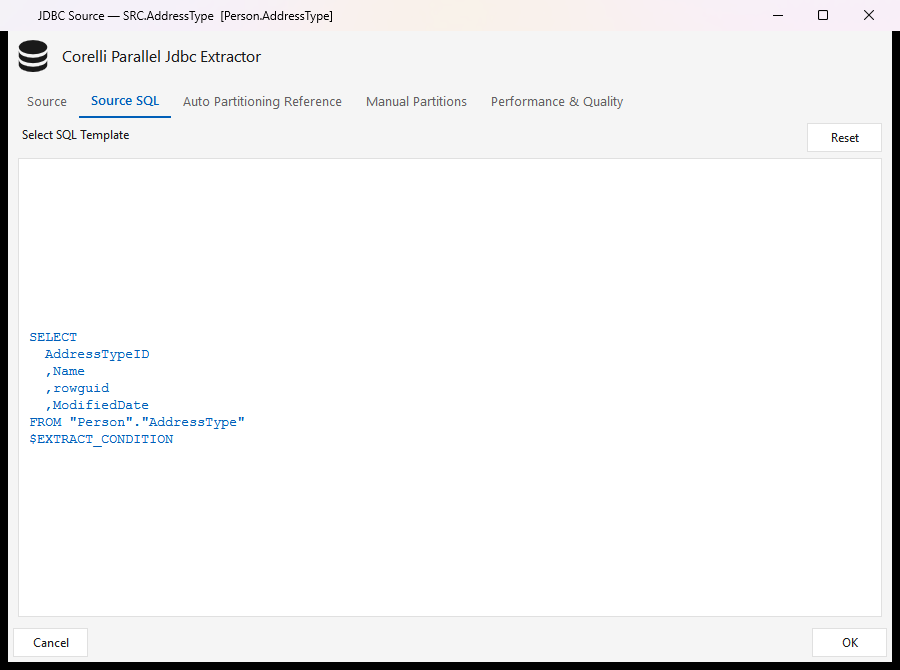
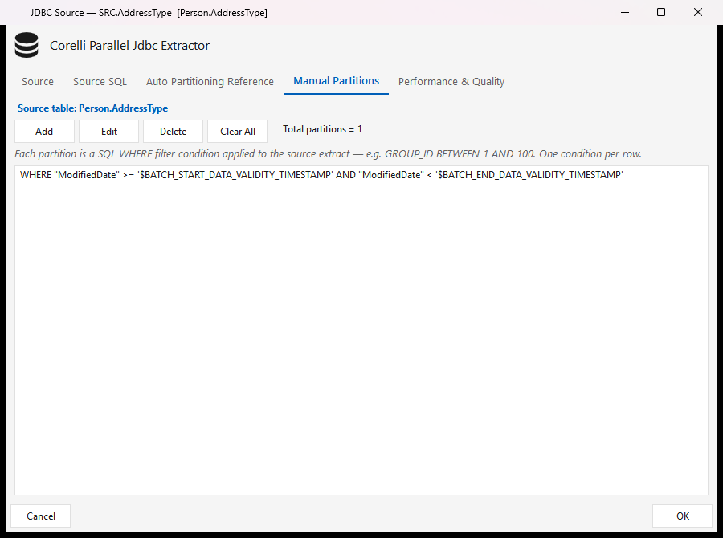
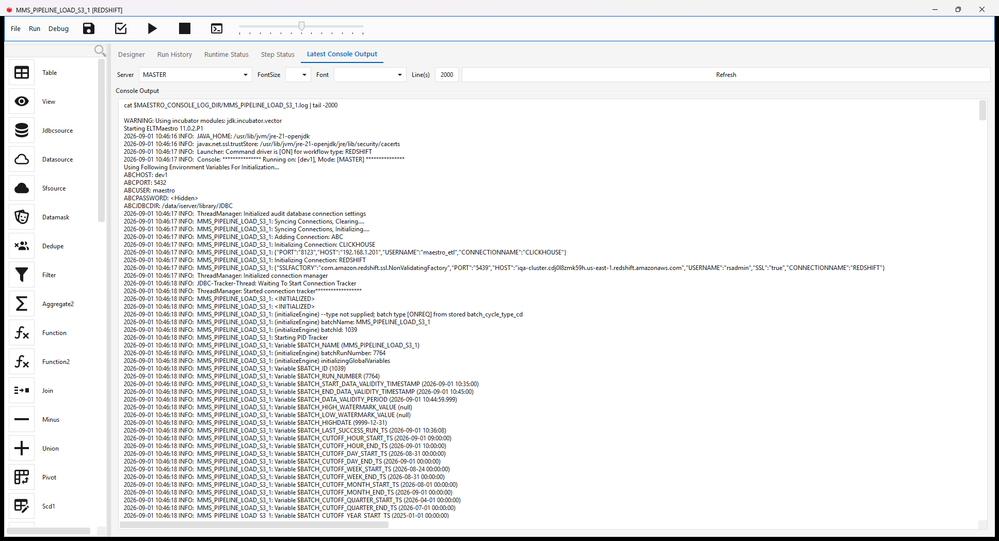
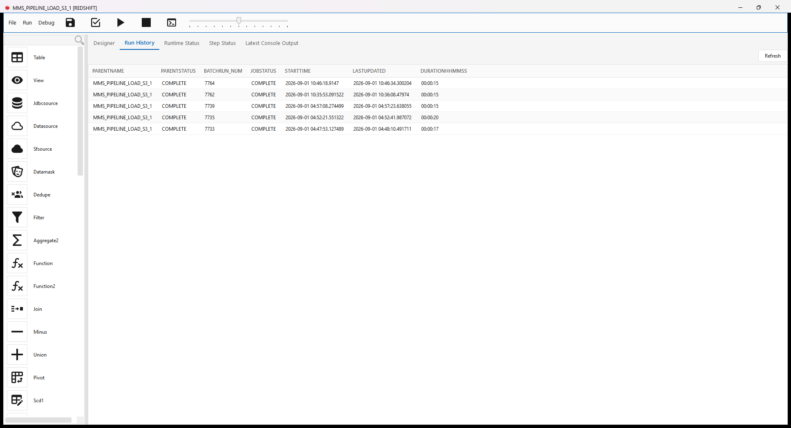
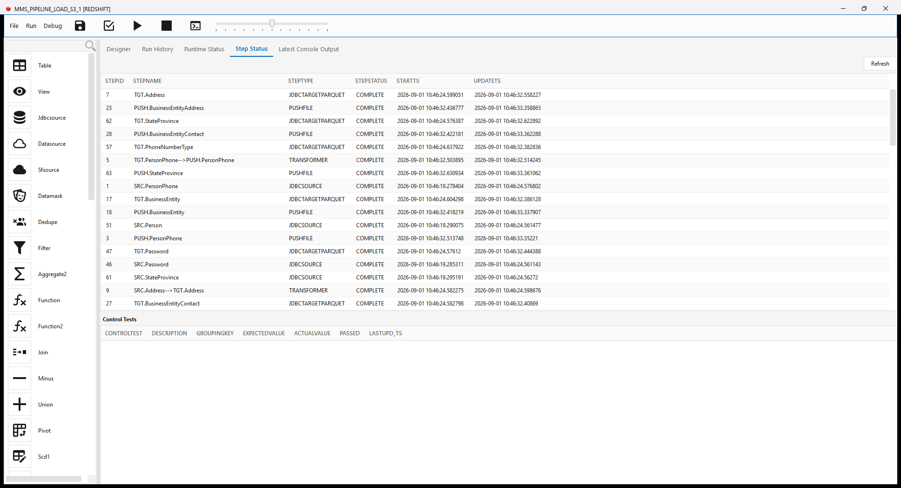
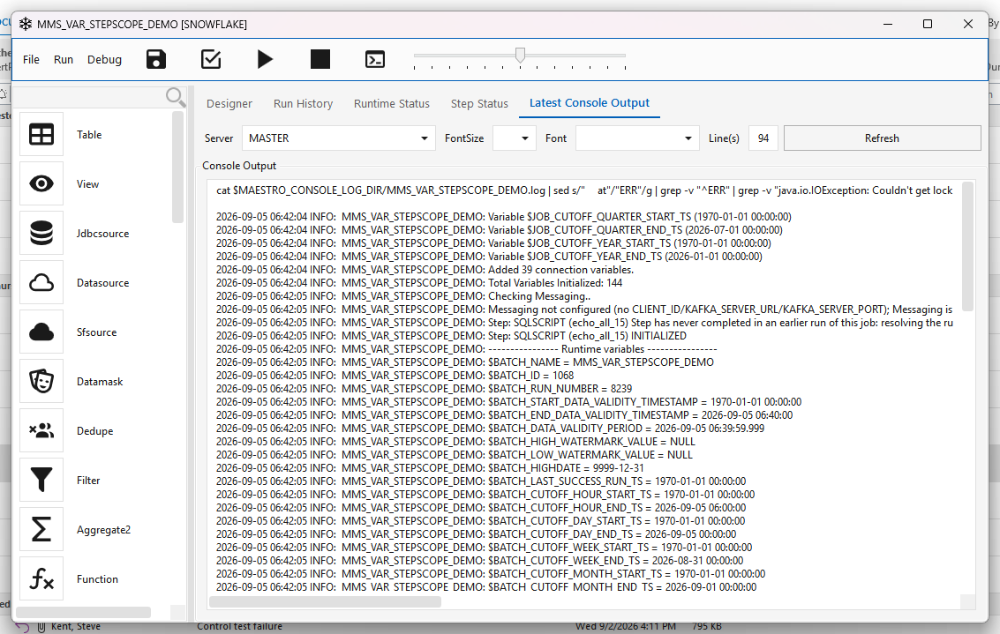

Incremental extraction with the data-validity window¶
A worked, end-to-end example of loading only what changed: SQL Server → parquet on S3 → Redshift, with the batch data-validity window scoping the extract and a step watermark handing the S3 location to the downstream load.
Every screenshot below is from a real run on a live environment, not a mock-up.
1. The two jobs¶
The pipeline is a pair. One extracts to parquet and publishes a watermark; the other reads that watermark and copies into Redshift.

MMS_PIPELINE_LOAD_S3_1 is a fan of 13 identical three-step chains, one per source table —
SRC.<Table> (JDBCSOURCE) → TGT.<Table> (JDBCTARGETPARQUET) → PUSH.<Table> (PUSHFILE).

2. Where the watermark predicate goes¶
Open a JDBCSOURCE step. The Source tab identifies the table — connection, catalog, schema,
table. Nothing about incrementality lives here.

The Source SQL tab shows the generated query, ending in the $EXTRACT_CONDITION placeholder:

$EXTRACT_CONDITION is filled from the Manual Partitions tab. Each manual partition is one SQL
WHERE clause applied to the extract, and this is where the window goes:

WHERE "ModifiedDate" >= '$BATCH_START_DATA_VALIDITY_TIMESTAMP'
AND "ModifiedDate" < '$BATCH_END_DATA_VALIDITY_TIMESTAMP'
Use
>= START AND < END, notBETWEEN.BETWEENis inclusive at both ends, so a row landing exactly on the boundary is extracted by two consecutive runs.
3. What the engine resolves at run time¶
The console output names every variable it binds. The window is the pair to check:

Variable $BATCH_START_DATA_VALIDITY_TIMESTAMP (2026-09-01 10:35:00)
Variable $BATCH_END_DATA_VALIDITY_TIMESTAMP (2026-09-01 10:45:00)
Variable $BATCH_DATA_VALIDITY_PERIOD (2026-09-01 10:44:59.999)
Note the naming crossover, which trips people up: START comes from calc_end_data_validity_ts()
and is derived from run history (type-independent); END comes from
calculate_data_validity_start_ts() and is wall clock plus the batch cycle type.
START advances only when a run reaches COMPLETE. A failed run does not move it, so the next run
re-reads the same span rather than skipping data.
4. Verifying a run¶
Run History — one row per batch run, with the run number the watermark is keyed on:

Step Status — per-step state and timings:

5. Handing the location downstream with $WM¶
PUSHFILE publishes a step watermark keyed <JOB_NAME>::<STEP_ID> whose value is the S3 prefix
it just wrote:
The Redshift job's COPYINTORS step refers to it as $WM{MMS_PIPELINE_LOAD_S3_1::33}, and the
engine substitutes the prefix at run time:
Step: COPYINTORS (COPY.ContactType) Resolved watermark ref $WM{MMS_PIPELINE_LOAD_S3_1::33}
[wm MMS_PIPELINE_LOAD_S3_1::33] -> pipeline/AdventureWorks2022/ContactType/2026-09-01/7764/
This is what keeps the two jobs decoupled: the load job never hard-codes a path or a date.
6. Expected behaviour worth recognising¶
Three outcomes look like failures and are not:
| What you see | Why |
|---|---|
START == END, 0 rows |
A re-run inside the same period. The window is genuinely empty. |
| Rows changed a moment ago are not picked up | They fall in the current, still-open period. They arrive on the next run. |
| Row counts in the target stay at full-table size | The load merges on keys. Check the timestamps, not the counts, to confirm the incremental worked. |
Adding a step to a workflow that has already run¶
A step you add today has no history of its own, but the workflow does — so under the plain rules it would inherit the batch's current window and take a small delta, silently skipping everything that existed before you added it. The step succeeds and its table is simply short, which is why this is easy to miss.
The engine now detects a step that has never reached COMPLETE and gives it first-run values, so its first execution reads from the epoch and backfills. Every later run uses the normal window. This is automatic and there is nothing to configure.
What it looks like in Latest Console Output — one line at the step's initialisation, then the runtime-variables block with every START bound at the epoch:

In server patch e45c8bfc5 (5 September 2026) — see Runtime variables.
7. Time zones — check this first when nothing loads¶
The window is computed in the engine JVM's time zone, not the database's. The boundaries come
from LOCALTIMESTAMP in the audit database, but the JDBC driver issues SET TimeZone from
TimeZone.getDefault() on every connect, which overrides the database setting.
alter database sqlmaestro set timezone therefore does not move the window. The lever is the
engine container's TZ / -Duser.timezone.
This matters because the window is compared against timestamps the source stamped, in the source's zone. If a SQL Server runs UTC while the engine host runs US Central, the window trails the data by five hours — and the extract matches zero rows while the batch reports COMPLETE. In the log that is indistinguishable from "no new data".
Since 11.0.2 the engine logs the zone it used, so this is visible without an experiment:
(initializeEngine) data-validity window [2026-09-01 10:35:00] -> [2026-09-01 05:45:00]
expressed in the ENGINE JVM time zone [America/Chicago / CDT]. ...
Three clocks to compare before blaming the watermark:
- the source's own clock — for SQL Server,
SELECT GETDATE(), GETUTCDATE()(equal ⇒ it runs UTC); - the engine JVM's zone, from the log line above;
- the window the run actually logged.
If the zone changes between runs of one job, the stored lower bound and the fresh upper bound end up in different frames and the window inverts. The engine refuses that run rather than reporting success over nothing:
and the batch is marked FAILED. The same guard catches the other cause of an inverted window —
running a batch under a different cycle type than its previous runs stored.